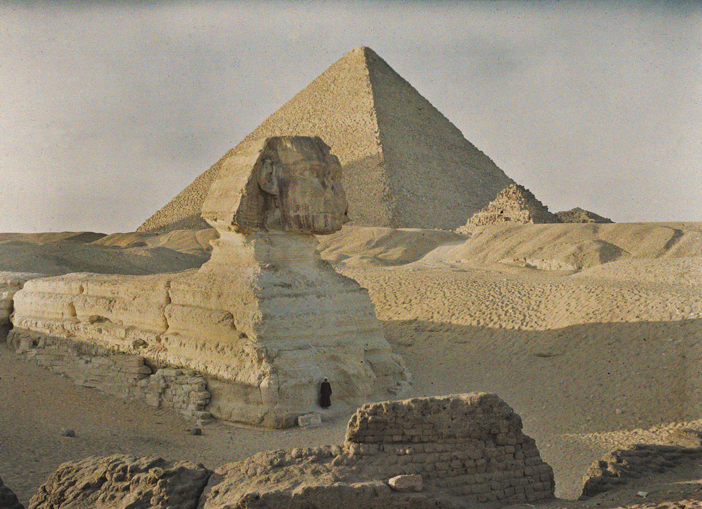
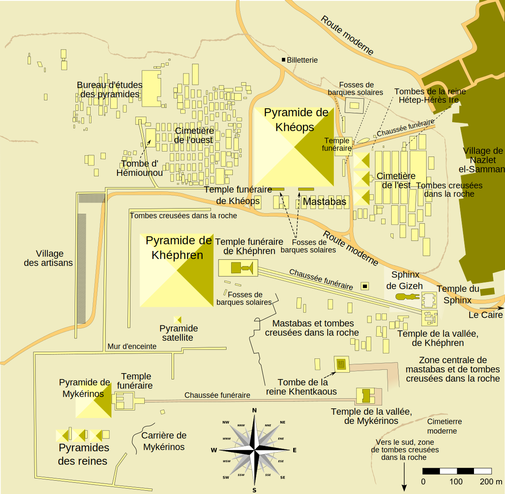
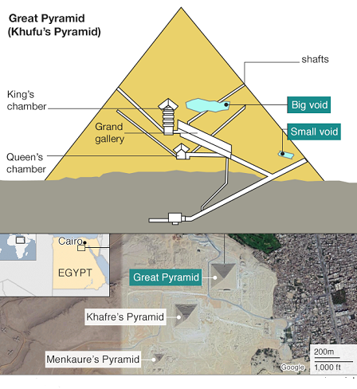
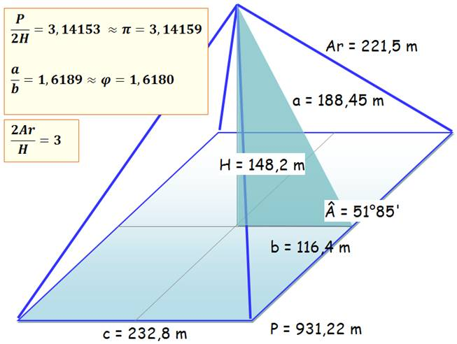
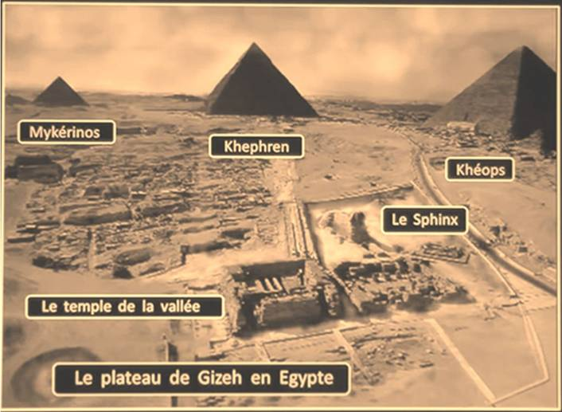

Al-Ula ruine
Ajantâ caves, Ellora caves
Altun-Ha, Lamanai Mask temple, Lamani Hight temple, pyramide de Yaxha
Angkor-Wat
Babylone
Les grottes de Barabar
Bimini route
Caracol site, pyramide de Xunantunich
Pyramides Caral-Supe
Rome, Pyramide de Cestius
Chavin de Huantar
Chichen Itza
Grande pyramide de Cholula
Les cinq Rathas
Coba site, Tulum ruines
Temple de Copan
Cuicuilco site, Xochicalco site
Les murs cyclopéen de Cuzco
Les Temple de Dalavanur
Deogarh temples
Dholavira site
Temple de Dzibilchaltún
El Rey ruines
El Tazumal
Les pyramides Khéops, Khéphren, Mykérinos
29.987794887601158, 31.164094694567474
Structures connue :





Date connue :
2700 à 2200 avant J.-C.
Göbekli Tepe
Gochang Dolmen
Site megalithique de Gornaya Shoria
Hampi temples
Les Moaï de l'Ile de Pâcques, Rapa Nui
Ingapirca
Karajia Sarcophages
Gunung Padang site
Khaju
Konârak Temple du Soleil
La Venta, Tabasco
Machu Picchu
GGantija
Mayapan site
La Mecque
Pyramides de Meïdoum, Rhomboïdale, Rouge
Pyramides de Méroé, Barkal
Mohenjo Daro
Monte Alban
Nakum site, pyramide de Tikal
Les lignes de Nazca
Ollantaytambo
Palenque site
Pyramides de Paratoari
Persepolis
Petra
Temple de Phra Pathom Chedi
Preah Vihear
Pyay
Quirigua ruines
Les colonnes de Rajajil
Roknia Dolmen
Parc archéologique de San Agustín
Pyramides de Djéser, Saqqarah
Siwa
SuKhothai
Tassili N'Ajjer
Teotihuacan
Thap Chien Dan, les Tours Cham
Les Têtes de Tres Zapotes
Ur
Pyramide d'Uxmal
Yonaguni Structure
Pyramide de Zakuleu